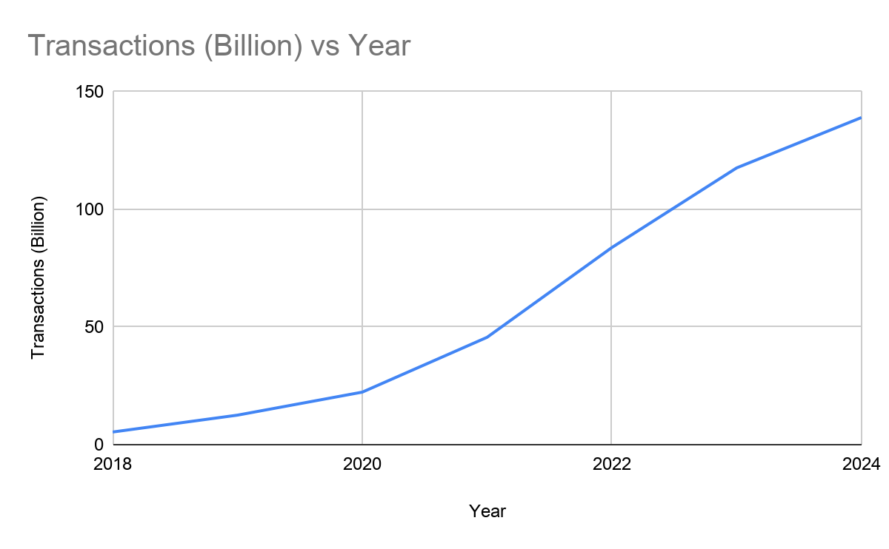

InquiryUPI and Behavioural Finance
Project 04 · Research paper
What happens to spending when paying takes three seconds?
UPI made payments in India almost frictionless. This paper asks what that does to behaviour: how often people spend, how much they notice, and how habits form.
- Field
- Digital payments, behavioural economics
- Data
- NPCI UPI statistics
- Method
- Descriptive analysis and behavioural concepts; no survey
- Status
- Paper completed
The idea
Handing over cash carries a small moment of awareness: you feel money leave your hand. Behavioural economists call this the pain of paying. A UPI payment takes a few taps on a screen and barely registers as an action. The paper argues that removing that friction changes not just how people pay, but how much and how often they spend.
The scale

Growth accelerated after 2020. The paper also notes that the average transaction size fell after 2021, which it reads as UPI moving from occasional large payments to small, everyday ones.
Four behaviours
Ease of payment
Less felt loss per payment means less hesitation, especially for small, low-stakes purchases. Individually trivial; added up, they nudge spending upward.
Impulse purchases
Cash builds in a pause (counting notes, waiting for change). An instant payment skips it, and ₹20 or ₹50 rarely feels like a decision.
Budget awareness
You can watch cash run out. Digital money gives no such cue, so small payments slip by until the balance is checked.
Habit
Used for everything, UPI stops being a choice and becomes the default, with cash as a backup.
A student with ₹200 in cash stops spending when it runs out. With UPI, ₹20 for a snack, ₹50 for an auto and ₹100 for lunch each feel manageable, and the total stays invisible until later.
Paraphrased from the paper’s illustrative example.
Both sides
The paper is not against UPI. It credits real gains in convenience, financial inclusion for small vendors, and transparency, since every payment leaves a record. Against that it sets overspending, weaker budget awareness, and new kinds of fraud. Its conclusion is that the challenge is not adopting digital payments but using them deliberately.
Open questions
The paper explains behaviour with established concepts but does not measure it directly. Some figures in it (monthly volumes, number of banks, average ticket size) still need to be checked against NPCI’s published statistics. A natural next step would be data on how individuals’ spending actually changes when they switch from cash to UPI.